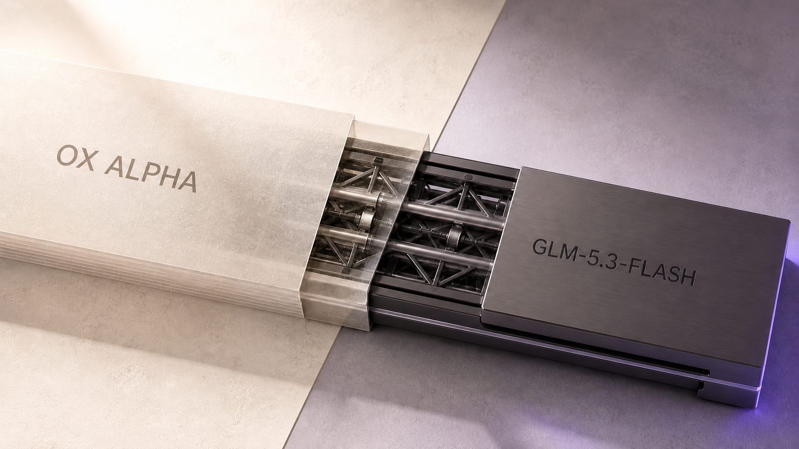

안녕하세요. dev.log입니다.
무료였던 Ox Alpha를 계속 코딩 모델로 써도 될까요? 2026년 8월 26일 Z.AI는 OpenCode와 OpenRouter에서 ox-alpha로 제공한 익명 모델이 GLM-5.3-Flash였다고 밝혔습니다. 320B 전체·18B 활성 매개변수, 100만 토큰 문맥, MIT 라이선스의 공개 가중치도 함께 공개했습니다.
공개 자료를 맞춰 보니 GLM-5.3-Flash는 비용이 중요한 코딩·도구 사용의 첫 후보로 둘 만합니다. 독립 평가의 가격 대비 지능 점수는 강했습니다. 화면에 답을 내보내는 속도와 첫 답의 정확도는 별도로 확인해야 합니다. 이름이 같아 보여도 서비스 경로가 다르면 같은 모델이라고 단정해서는 안 됩니다.

Ox Alpha 정체 공개로 확인된 GLM-5.3-Flash
Z.AI 공식 문서는 출시 전에 GLM-5.3-Flash를 ox-alpha라는 이름으로 익명 테스트했다고 밝힙니다. 확인된 경로는 OpenCode와 OpenRouter입니다. 두 서비스에서 보인 모델에 대해서는 공개 포렌식의 GLM-5 계열 추정이 제조사 확인으로 바뀌었습니다.
전체 매개변수 320B 가운데 토큰을 처리할 때 18B만 활성화하는 혼합 전문가(MoE) 모델이며, 선형 어텐션과 희소 어텐션을 결합합니다. 모든 정보를 같은 방식으로 훑는 대신 가까운 흐름과 멀리 있는 핵심을 서로 다른 경로로 처리해, 긴 문맥에서 필요한 계산량을 줄입니다.
| 공개 뒤 확인된 항목 | GLM-5.3-Flash | 독자가 체감할 변화 |
|---|---|---|
| 모델 계보 | Z.AI의 GLM-5 계열 | 익명 제공자 추정에서 공식 개발사 확인으로 변경 |
| 입력 | 텍스트·이미지·비디오·파일 | 코드뿐 아니라 화면과 문서가 섞인 작업까지 겨냥 |
| 문맥 | 100만 토큰 | 긴 코드베이스와 문서를 한 요청에 담을 여지가 큼 |
| 공개 범위 | 가중치 공개, MIT 라이선스 | API 외에 자체 배포와 상업적 활용 가능 |
| 추론 설정 | low·high·max, 비활성화 불가 | 짧은 작업도 추론을 사용하며 기본값은 max |
이 표의 사양은 능력의 범위를 설명할 뿐, 실제 100만 토큰 정확도나 이미지·비디오 품질을 증명하지는 않습니다. dev.log의 기존 테스트도 짧은 텍스트 질문만 다뤘습니다.
GLM-5.2보다 높아진 Z.AI 코딩·도구 점수
Z.AI는 GLM-5.3-Flash가 GLM-5.2보다 강하고 Claude Opus 4.8에 가까운 코딩·에이전트 성능을 낸다고 설명합니다. 아래 표는 Z.AI가 공개한 평가 중 성격이 다른 세 항목만 추렸습니다. DeepSWE는 저장소의 소프트웨어 문제 해결, Toolathlon은 도구 사용, AutomationBench는 여러 단계의 자동화 작업을 재며 모두 높을수록 좋습니다.
| Z.AI가 공개한 비교표 | GLM-5.3-Flash | GLM-5.2 | Opus 4.8 | GPT-5.6 Terra | Gemini 3.7 Flash |
|---|---|---|---|---|---|
| DeepSWE v1.1 | 63.4 | 46.2 | 58.0 | 69.6 | 65.3 |
| Toolathlon Verified | 78.4 | 59.9 | 76.2 | 74.9 | 공개값 없음 |
| AutomationBench v1.0.6 | 48.8 | 26.2 | 41.0 | 37.2 | 52.3 |
세 항목에서는 GLM-5.2보다 모두 높았습니다. 그러나 GPT-5.6 Terra와 Gemini 3.7 Flash까지 포함하면 항목별 선두가 달라집니다. DeepSWE에서는 GPT-5.6 Terra가, AutomationBench에서는 Gemini 3.7 Flash가 앞섭니다. 이 제조사 비교표는 항목마다 하네스, 추론 설정, 반복 횟수가 다릅니다. 사용자의 저장소에서도 같은 순서가 나온다고 단정할 수 없습니다.
GLM-5.3-Flash 지능 지수 57, 출력 50.2토큰/초
제조사와 별개로 Artificial Analysis는 아홉 가지 평가를 묶은 Intelligence Index v4.1.1을 제공합니다. 지능 지수는 여러 추론·지식·코딩 과제를 합친 값이며 높을수록 좋습니다. 출력 속도는 첫 토큰이 나온 뒤 초당 생성되는 토큰 수, 과제당 비용은 같은 지수의 한 과제를 처리하는 데 든 가중 평균 비용입니다. 전체 출력량은 이 평가 묶음에서 답변과 추론에 사용한 토큰을 합친 값입니다. 지능 점수가 비슷한 모델의 생성량과 비용을 비교하는 참고 자료이지, 독자가 읽는 답변 길이와 같지는 않습니다.
2026년 8월 27일 측정값을 같은 기준으로 나란히 놓았습니다.
| Artificial Analysis 측정 | 지능 지수 | 출력 속도 | 지수 과제당 비용 | 전체 출력량 |
|---|---|---|---|---|
| GLM-5.3-Flash | 57 | 50.2토큰/초 | $0.09 | 150M토큰 |
| GLM-5.2 max | 53 | 69.3토큰/초 | $0.44 | 140M토큰 |
| GPT-5.6 Terra max | 57 | 108.9토큰/초 | $0.53 | 96M토큰 |
| Gemini 3.7 Flash high | 56 | 361.7토큰/초 | $0.40 | 64M토큰 |
GLM-5.3-Flash는 GLM-5.2보다 지능 지수가 4점 높고 과제당 비용은 약 5분의 1입니다. GPT-5.6 Terra와는 같은 57점을 기록하면서 비용은 약 6분의 1입니다. 반면 출력 속도는 GLM-5.2보다 느렸고 Gemini 3.7 Flash high의 약 7분의 1이었습니다. 전체 출력량도 네 모델 중 가장 많았습니다.
Flash는 가장 빨리 답하는 모델이라는 뜻이 아니었습니다. 이 모델은 적은 활성 매개변수와 낮은 API 가격으로 높은 복합 지수를 유지하는 데 강점이 있습니다. 출력 속도와 답변 길이는 API 제공자, 추론 노력, 요청 종류에 따라 달라지므로 자신의 작업에서 다시 재야 합니다.
입력 1,000만·출력 200만 토큰의 정상가 $2.50
Z.AI 가격표의 정상가는 100만 토큰당 입력 $0.15, 캐시 입력 $0.03, 출력 $0.50입니다. 2026년 9월 9일 24:00(UTC+8)까지는 50% 할인이 적용되지만, 계속 사용할 모델을 고를 때에는 종료 뒤 가격을 기준으로 잡는 편이 안전합니다.
입력 1,000만 토큰과 출력 200만 토큰을 사용한다고 가정하고 캐시를 제외해 계산했습니다. Python 계산식과 출력은 글 묶음의 artifacts/compare_costs.py와 compare_costs.txt에 보존했습니다.
| 모델과 가격 조건 | 입력 비용 | 출력 비용 | 합계 |
|---|---|---|---|
| GLM-5.3-Flash 현재 할인 | $0.75 | $0.50 | $1.25 |
| GLM-5.3-Flash 정상가 | $1.50 | $1.00 | $2.50 |
| GLM-5.3 | $14.00 | $8.80 | $22.80 |
| GLM-5.2 | $14.00 | $8.80 | $22.80 |
정상가끼리 비교해도 GLM-5.3과 GLM-5.2는 이 시나리오에서 GLM-5.3-Flash의 9.12배입니다. 입력과 출력 비율이 달라져도 각각의 단가는 약 9.33배와 8.8배 차이입니다. 실제 청구액에는 캐시 적중률, 웹 검색 같은 도구 호출, 공급자 가격이 영향을 주므로 이 계산은 API 단가의 구조를 비교하는 예시입니다.
GLM-5.3-Flash를 먼저 써 볼 조건
코딩 에이전트에 넣을 기본 후보를 하나 고른다면 GLM-5.3-Flash부터 짧게 시험해 볼 만합니다. GLM-5.2보다 독립 지능 지수가 높고, 정상가와 과제당 비용은 크게 낮았습니다. 공개 가중치와 MIT 라이선스가 필요한 조직에도 선택지가 생겼습니다.
- 결과가 화면에 빨리 이어져야 한다면 Gemini 3.7 Flash 같은 고처리량 모델과 완료 시간을 비교하세요.
Flash라는 이름만으로 속도를 선택해서는 안 됩니다. - 생성 토큰이 비용을 늘린다면 API에 기록된 답변·추론 토큰을 확인하세요. Artificial Analysis의 같은 평가 묶음에서는 GLM-5.3-Flash가 비교한 네 모델 중 가장 많은 출력 토큰을 사용했습니다.
- 어려운 저장소 수정이 핵심이라면 Z.AI의 DeepSWE 표에서 더 높았던 GPT-5.6 Terra와 Gemini 3.7 Flash를 같은 과제로 시험하세요. 제조사 벤치마크의 순위보다 자신의 저장소에서 재현한 성공 여부를 우선해야 합니다.
- 정답이 있는 계산·일정·구조화 출력에는 예상 답과 검산 조건을 먼저 적으세요. 싼 반복 비용은 재검증을 생략할 이유가 아닙니다.
처음에는 같은 짧은 작업을 세 번 반복해 정답, 총 입력·출력 토큰, 완료 시간을 기록하면 됩니다. 품질 차이가 작다면 GLM-5.3-Flash를 유지하세요. 속도나 실패 비용이 더 크면 그 병목에서만 모델을 바꾸면 됩니다.
oxalpha.com 테스트의 상위 제공자는 미확인
2026년 8월 24일 Codex는 oxalpha.com 웹 채팅에서 일정 퍼즐, React 경쟁 상태, 문서 밖 정보 거절, 할인·세금 계산을 문항별 한 번씩 실행했습니다. React 진단·근거 제한·계산은 통과했지만, 일정 퍼즐에서는 C=1, D=4를 정확히 두 슬롯 차이라고 잘못 검산했습니다. 오류를 지적한 새 대화에서는 유일한 정답을 찾았습니다.
이 테스트를 GLM-5.3-Flash의 직접 결과로 쓰지는 않았습니다. oxalpha.com은 모델 개발사와 무관한 독립 인터페이스였고, 상위 처리 제공자를 공개하지 않았습니다. Z.AI가 확인한 OpenCode·OpenRouter의 ox-alpha와 같은 이름을 썼더라도 요청 경로가 같다는 근거는 없습니다.
이 구분은 새 모델을 비교할 때 이름과 응답만 기록해서는 부족하다는 점을 보여 줍니다. 서비스 URL, 모델 ID, 공급자, 실행 시점을 함께 남겨야 공개 뒤에도 결과를 정확한 모델에 귀속할 수 있습니다. oxalpha.com의 작은 테스트는 해당 웹 서비스의 관찰로만 남기며, GLM-5.3-Flash의 성능 순위에는 반영하지 않았습니다.
GLM-5.3-Flash는 비용을 줄이며 여러 작업을 반복하기 좋은 출발점입니다. 중요한 결과라면 절약한 비용의 일부를 같은 질문의 재실행, 테스트 코드, 다른 모델의 교차 검토에 쓰세요. 낮은 단가를 검증 횟수로 돌려주는 선택이 이 모델과 가장 잘 맞습니다.
참고 자료
- Z.AI GLM-5.3-Flash 공식 문서
- Z.AI GLM-5.3-Flash 출시 글
- Z.AI API 가격표
- Hugging Face GLM-5.3-Flash 모델 카드
- OpenRouter GLM-5.3-Flash 모델 페이지
- Artificial Analysis GLM-5.3-Flash
- Artificial Analysis GLM-5.2
- Artificial Analysis GPT-5.6 Terra
- Artificial Analysis Gemini 3.7 Flash
- dev.log Codex 직접 테스트:
2026-08-24, Ox Alpha 문항별 1회